Step One: Get a Horn!
Buy/rent a trumpet. Go to your local music shop and ask the clerk for a student trumpet to rent or buy. Ask to make sure the trumpet is in the key of B flat (B flat is preferred). You may get a different key, but concert B flat will be the easiest in the long run. It may be an unlabeled brand. Don't worry; many student instruments come from an unmarked brand. It is fine to start off with. Make sure you check the following before you start to rent your new trumpet. Just be aware that buying a trumpet can be expensive.
- That the valve casing has no dents in it.
- That the valves move up and down smoothly and not too noisily.
- And that all the slides move freely back and forth.
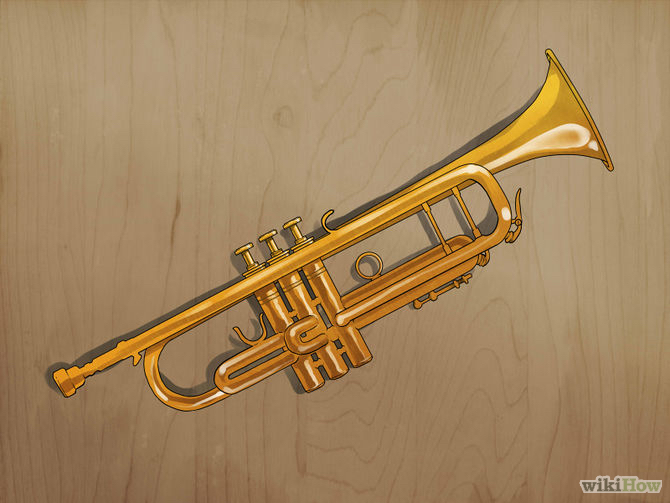
Back To Top
Step Two: Initial Learning Without Your Trumpet
Keep your trumpet in its case to start. Say the letter "M", but stop at the "mmm" part. Keep your lips in that position. Now, blow through this position in a buzzing sound. It may sound odd at first, but that is the basic lip position to use while playing.
To get 'buzzing' down, here are a few tips: Pretend there is a small piece of paper on the tip of your tongue. Stick your tongue out slightly, just the tip, and scrape the paper off your tongue quickly and spit it away from your mouth. Your lips should catch each other, creating a sound similar to a 'raspberry'.
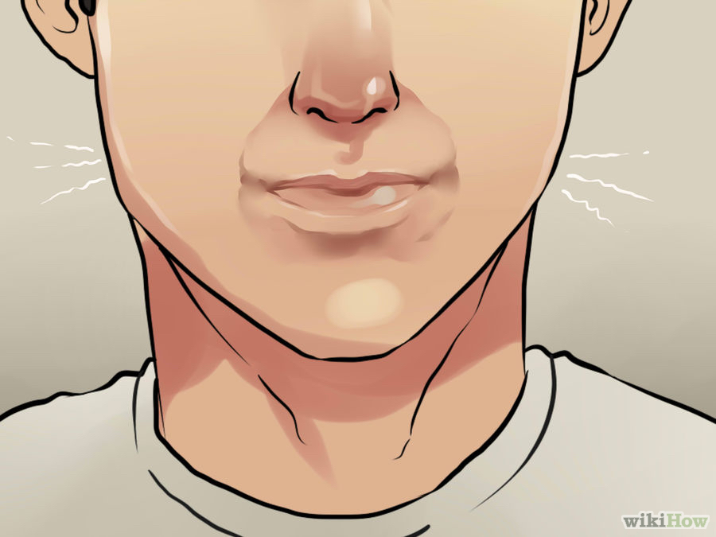
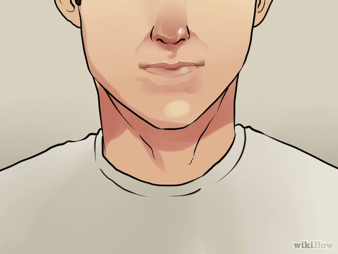
Step Three: Learning with the trumpet
-
Get out your trumpet. After assembling it fully, inhale through your mouth, assume the proper lip position, put the instrument up to your lips, and vibrate using your lips, making the buzzing sound. Don't push any valves yet. You should feel your lips change tightness as they lock into a note. Don't push the valves yet!
-
After playing your first note, try tightening your lips slightly and pushing down valves one and two. Note that valves are numbered one through three. Valve number one is closest to you, and valve number three is toward the bell of the horn. The note should be higher.
Congratulations! You've now played your first two notes on a trumpet!
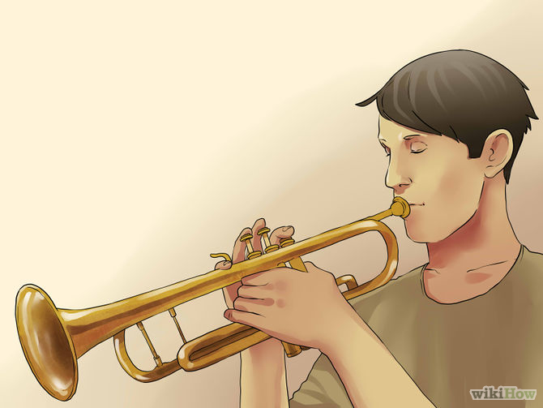
-
Since buzzing can be a very hard step to master for some people, carry around a mouthpiece with you. If you buzz into your mouthpiece correctly, you should be able to make a coherent sound. It may sound a lot like Donald Duck, but that is a good thing. If you sound like Donald, you're doing something right.
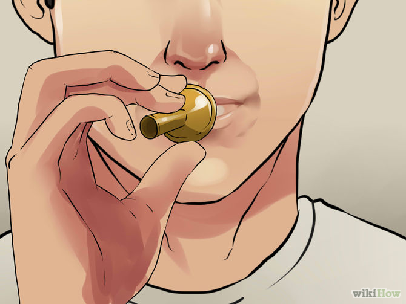
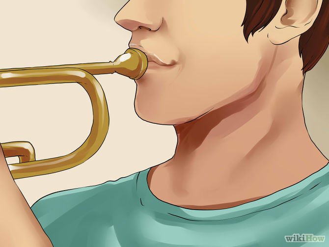
Step Four: Learning your first scale
This section uses notes on another site to assist your learning. You may notice that the names of the notes given here on the page are different from those at the website. This is because the names of the notes at the website are for piano, not trumpet. They were "transposed" to be the correct note for trumpet. You will learn more about this after you continue to play for a while.
-
Learn your first scale. A scale is an ascending or descending collection of pitches proceeding by a specified scheme of intervals.
-
Play your first note. Go to www.musikit.com. Play this note on your trumpet while pushing no valves down. That note is C.
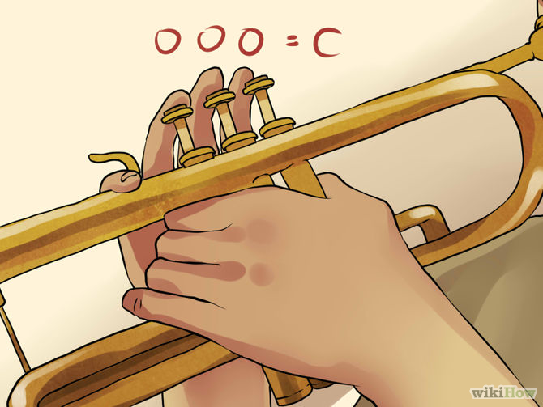
-
Push down valves one and three. Play note D. If you can't play D, try barely tightening your lips.
-
Push down valves one and two. Tighten your lips a little more, and play note E: www.musikit.com.
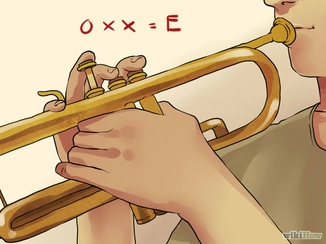
-
Push down valve one. Tighten your lips a little more, an www.musikit.com.
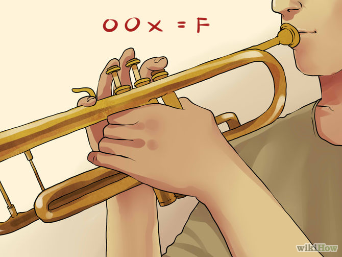
-
Next, don't push down any valves. Instead, tighten your lips some more, and play note G: www.musikit.com.
-
Push down valves one and two, tighten your lips some more, and play note A: www.musikit.com.
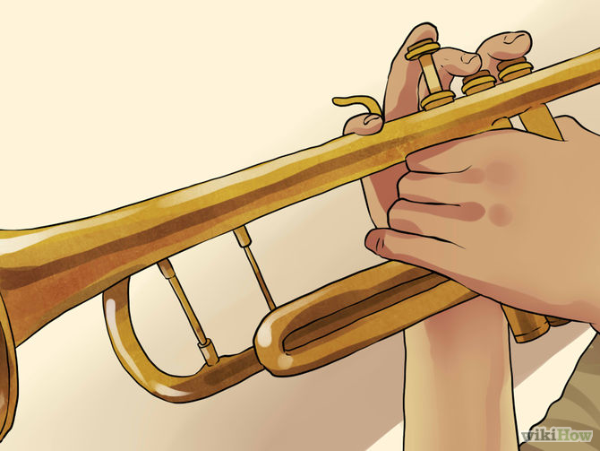
-
Push down only valve two. Tighten your lips a little more, and play note B: www.musikit.com.
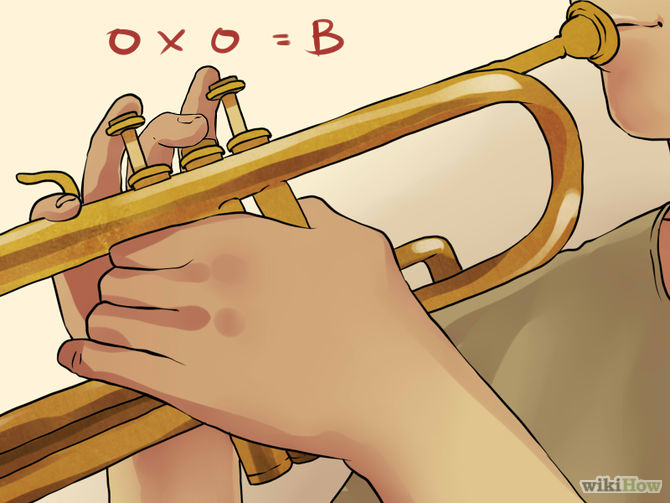
-
Finally, let go of all the valves and play note high C: www.musikit.com.
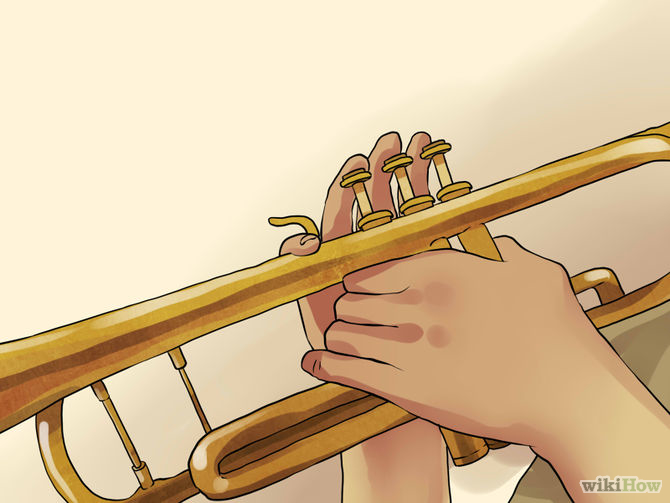
-
Congratulations! You just played your first C scale on a trumpet. This is also called the "Concert B flat" scale, but you will learn more about that when you get a music book.
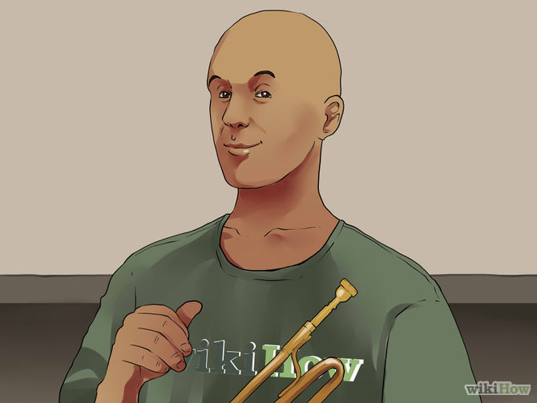
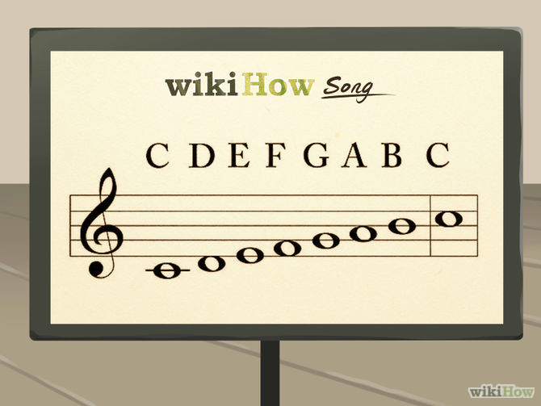

Next it's a good idea to learn Concert E flat scale. This scale has higher notes, and may be harder at first. But with practice, persistence, and some help from a pro, you could get the high notes well. After you get the E flat scale, move on to higher-or lower-scales.
Back To TopStep Five: Practicing and advancing
-
Practice the scales as much as possible. Try to practice every day for at least 15 minutes, although it is recommended that you practice about an hour a day, once you have the stamina for it. When you start off, and especially when you only have one scale to play, fifteen minutes should be plenty.
-
Buy a beginner trumpet music book. Follow its instructions beyond what you've learned here. What you've learned here is only one of twelve scales; the book should teach you at least one or two, and many songs, before you move on to another, or sheet music. Good luck! The trumpet is a great instrument that takes a whole lot of practice to play it well.
A great book to begin with is Rubank Elementary Methods for B flat Trumpet or Cornet, or a Getchell. Ask the store clerk for either of these.
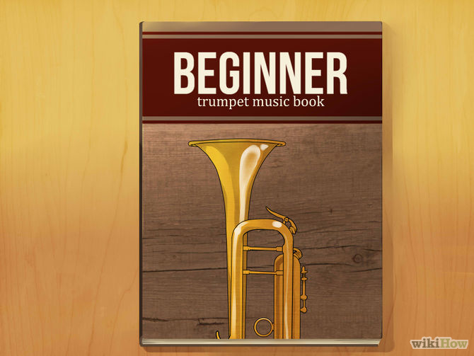
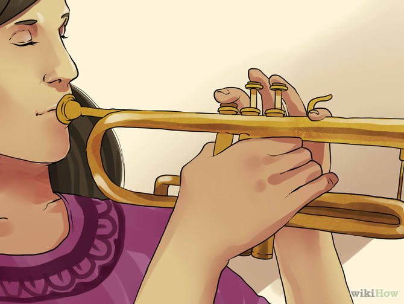